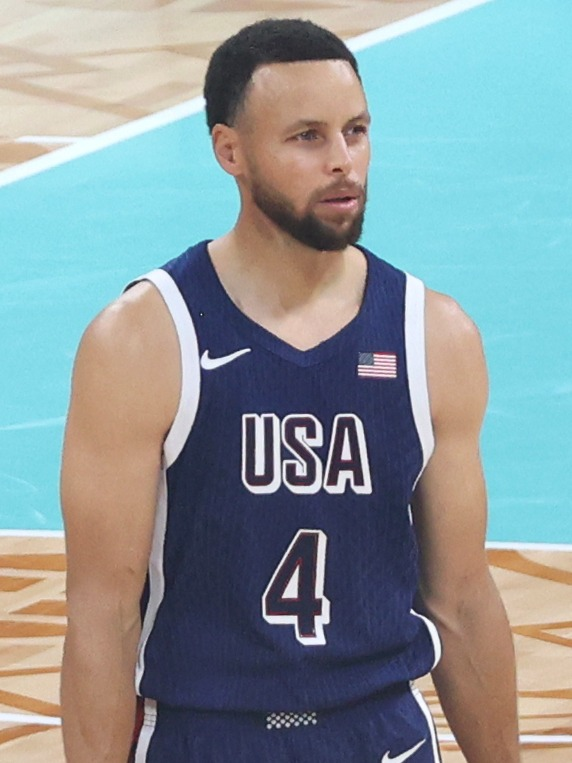

The Warriors Are Out of Easy Answers, and That's the Whole Story
The dynasty bought Golden State years of benefit of the doubt. That grace period is finally over.

There was a long stretch where following the Warriors meant never really having to worry. You could lose your mind in March and still trust that the machine would turn back on when it mattered. The shooting, the spacing, the muscle memory of four titles, all of it functioned like a savings account you could draw on whenever the games got heavy. That account isn't empty, exactly. But it's a lot lighter than it used to be, and everybody in the building knows it.
I still catch myself doing the old thing. Down twelve in the third, phone face down on the couch, and some part of my brain goes: fine, here it comes. Then the third quarter ends and it hasn't come.
That's the part that actually stings.
What makes this era compelling is that the easy answers are gone. For years the answer to every problem was the same: run it back, trust the core, let greatness sort it out. That worked because the core was genuinely great and genuinely healthy enough, often enough. Now every decision carries a cost that didn't exist before. Minutes matter more. Development matters more. The margin between a fun regular season and a real contender has narrowed to something you can measure in a handful of possessions a night.
The honest read is that this is a franchise trying to do two things at once, and those two things don't always get along. One job is to honor the remaining prime of the players who built the dynasty, to compete now, to not waste a single healthy season. The other job is to figure out what this team becomes on the other side, to give young players real reps and real trust. Every roster in transition lives in that tension. Few of them have to live in it under the weight of championship expectations that the fan base isn't remotely ready to let go of.
And that's the part I find fascinating rather than depressing. The Warriors spent a decade being the answer key for the rest of the league. Now they're the ones with the hard test in front of them. How you feel about that probably says more about you than about the team. If you need them to be favorites to enjoy it, this is going to be a rough stretch. If you can appreciate a proud organization actually having to solve something again, this might be the most interesting Warriors story in years.
Nobody in the Bay wants to hear the word rebuild, and honestly it doesn't fit a team still built around proven winners. But the comfortable version of this franchise is over, and pretending otherwise doesn't help anyone. The next real chapter gets written by whether they can build something durable around what remains, or whether they ride the current core as far as it goes and deal with the rest later. There's no wrong answer yet. There's only the fact that, for the first time in a long time, the answer isn't obvious. For a franchise this spoiled by success, that's the whole story.
More coverage: Warriors section · Bay Area NBA · Bay Area Sports Blog home